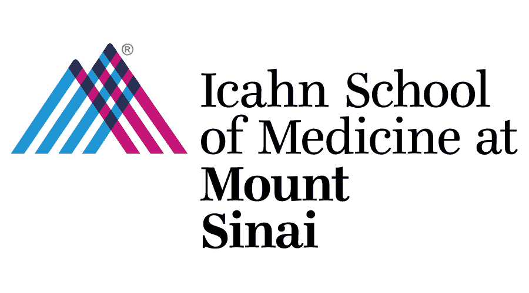

Reporting Structure
Senior Leadership
Click any person for their full title, module, reporting line, and contact.
{{ leadershipTree }}

Click any person for their full title, module, reporting line, and contact.
Try a different name, role, module, or phase — or clear the filters.